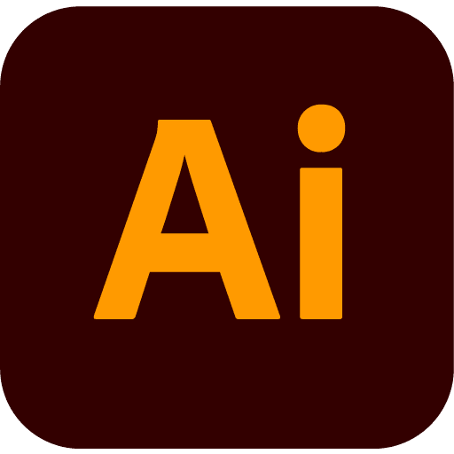

김태준
웹 개발자 포트폴리오
안녕하세요.
웹개발자를 지원하는 신입 김태준입니다.
“기술과 디자인 모두를 아우르는 웹 개발자로서, 실무 경험과 학습을
통해 빠르게 성장하는 신입 개발자입니다.”
ABOUT ME
| 이름 | 김태준 | 생년월일 | 1994.01.03 |
|---|---|---|---|
| 전화번호 | 010-8471-2165 | 이메일 | asxowns@naver.com |
| 주소 | 부산시 중구 대청동 |
SKILLS
Backend


Frontend


Etc


- 

PROJECT

기술 스택
SpringBootJSPSpring Data JPAmariaDBJavaScriptHTML5CSS3Figma
| 프로젝트 주제 | 휴먼 클라우드 이력 관리 플랫폼 웹개발 (팀프로젝트 6인) |
|---|---|
| 프로젝트 명 | jobhunter |
| 프로젝트 설명 | 잡코리아, 사람인 같은 구인구직 사이트들을 참고하여 플랫폼 웹개발을 하였습니다. |
| 담당 작업 | 자유게시판, 기업게시판 CRUD를 담당했으며 댓글, 검색 기능도 추가하였습니다. 그리고 전체적인 디자인과 CSS부분을 맡아서 하였습니다. |
| 소감 | 구인구직 사이트 개발 프로젝트를 통해 실제 비즈니스 요구사항을 기술적으로 구현하는 과정을 경험할 수 있었습니다. 스프링 프레임워크를 사용하여 견고하고 확장 가능한 백엔드 시스템을 구축했으며, 이 과정에서 MVC 패턴의 실제 적용과 데이터베이스 설계의 중요성을 깊이 이해하게 되었습니다. 이번 프로젝트를 통해 전체 웹 애플리케이션 개발 사이클을 경험할 수 있었고, 실제 사용자의 요구를 충족시키는 서비스를 개발하는 것의 중요성을 배웠습니다. 앞으로는 마이크로서비스 아키텍처의 도입과 더 나은 사용자 경험을 위한 프론트엔드 기술 향상 등을 목표로 하고 있습니다. 이 경험은 제 개발자 경력에 있어 중요한 이정표가 되었으며, 앞으로의 프로젝트에 더욱 자신감을 갖고 임할 수 있는 기반이 되었습니다. |
| 깃허브 주소 | https://github.com/asxowns/JobHunter.git |
X

기술 스택
SpringBootJSPMybatismariaDBJavaScriptHTML5CSS3Figma
| 프로젝트 주제 | 휴먼 클라우드 이력 관리 플랫폼 웹개발 - REST API (팀프로젝트 6인) |
|---|---|
| 프로젝트 명 | goodjob |
| 프로젝트 설명 | 서버와 클라이언트를 나누어 REST API를 활용하여 구인구직 플랫폼 웹개발을 하였습니다. |
| 담당 작업 | 구직자 이력서 등록, 이력서 상세페이지, 즉시지원 등 이력서 관련 기능을 담당하였고 전체적인 디자인과 CSS작업을 도맡아 진행하였습니다. |
| 소감 | 이번 프로젝트를 통해 마이크로서비스 아키텍쳐의 실제 구현을 경험해보았습니다. 서버를 두개 나누어 개발함으로써 각 서비스의 독립성과 확장성을 높일 수 있었지만 동시에 데이터 일관성 유지와 서비스간 통신관리의 복잡성도 체감했습니다. REST API를 설계하고 구현하는 과정에서 효울적인 리소스 관리와 버전 관리의 중요성을 배웠습니다. |
| 깃허브 주소 | https://github.com/quswldms137/goodjob22.git |
X
기술 스택
SpringBootThymeleafMybatismariaDBJavaScriptHTML5CSS3Figma
| 프로젝트 주제 | TV프로그램 냉장고를부탁해의 영감을 받아 웹상의 나의 냉장고에 재료를 등록하고 그 재료들로 만들수있는 메뉴나 레시피들을 추천해주는 서비스 (팀프로젝트 6인) |
|---|---|
| 프로젝트 명 | 뭐뭐뭐 |
| 프로젝트 설명 | 웹상에서 사용자의 냉장고에 내가 실제로 가지고있는 재료들을 등록하면 그 재료들을 이용해서 메뉴나 레시피를 추천해주는 서비스입니다 그외 그 날의 날씨나 기온에 어울리는 메뉴추천, 사이트내의 추천레시피, 추천메뉴 등의 기능이 있습니다. |
| 담당 작업 | 메뉴 레시피의 등록, 수정, 삭제를 작업 하였고, 레시피 상세페이지 메인 페이지의 최다 조회 레시피, 인기레시피, 랜덤 레시피, 랜덤 메뉴, 랜덤 유튜브 영상, 스프링 시큐리티를 적용하여 인증 인가 작업을 하였습니다. 그리고 서비스의 전체적인 레이아웃을 잡고 디자인 작업을 하였습니다. |
| 소감 | 프로젝트 기간중 가장 길었던 한달이었지만 중간에 학원사람들에게 사용성 테스트를 한 결과, 부정적인 평가를 많이 받고 전체적인 UI/UX를 디자인과 레이아웃을 다시잡는 기간을 가지고 현재 페이지들이 나오게 되었습니다. 그리고 처음 프로젝트에 스프링 시큐리티를 적용하다보니 인증/인가 작업에 대해 이해하는 시간이 필요 했고 어느정도 돌아가는 구조를 파악하게 되었습니다. 레시피 관련 작업중 레시피 수정부분에서 등록된 레시피 순서에 대한 데이터를 불러오고 중간의 순서를 삭제하면 순서에 대한 숫자 재정렬에 대한 문제를 겪었고 인터넷검색과 AI의 도움을 받아 해결하였고 자바스크립트에 대한 이해도를 한단계 올리게 된 계기가 되었습니다. 다양한 문제들을 해결하는 과정을 통해 많은 것을 배우고 성장하는 프로젝트였습니다. |
| 깃허브 주소 | https://github.com/ohseungheon/Harmony.git |
X

기술 스택
JavaScriptHTML5CSS3FigmaXD
| 프로젝트 주제 | 국내 여행 정보 사이트 브랜딩 (개인 프로젝트) |
|---|---|
| 프로젝트 명 | 여행 일기 |
| 프로젝트 설명 | 국내의 여행지 소개와 여행지에 따른 행사나 이벤트를 알려주는 사이트를 브랜딩하여 제작한 사이트 입니다. |
| 담당 작업 | 개인 프로젝트로 전체 모든 작업을 혼자 진행 하였습니다. |
| 소감 | 브랜딩을 처음 진행하다보니 주제선정, 설계, 작업을 혼자 진행하였고 퍼블리싱 위주의 작업을 하였습니다. |
| Web Site | https://asxowns.github.io/travel_diary/ |
| Mobile Site | url.kr/qsat7j |
| Web Guide | web_guide.html |
| BI&BX Guide | bibx_guide.html |
| Mobile Guide | mobile_guide.html |
X